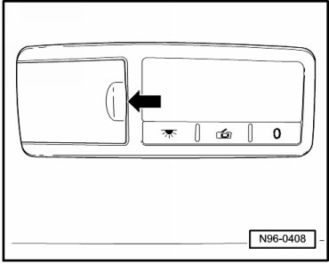
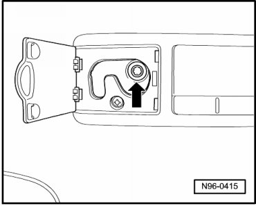
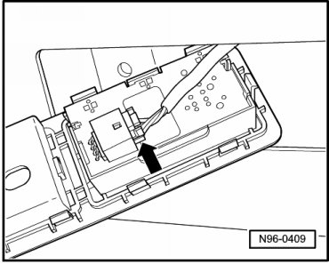
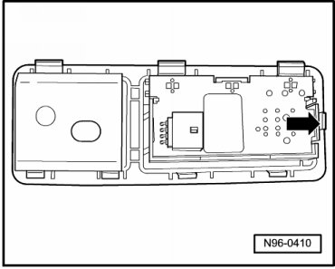
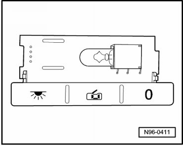

Rear Reading Lamps
Roof Trim Lamps and Switches
Rear Reading Lamps
• Removal and installation for both rear reading lamps is performed in the same way and is only described for one reading lamp.
Removing
- Switch off ignition, switch off all electrical consumers and remove ignition key.
- Fold up cover - arrow -.

- Remove mounting bolt - arrow - and remove reading lamp.

- Release and disconnect the connector - arrow -.

Bulb, replacing
- Disengage retaining tab - arrow - and remove lamp carrier with switches from diffusion lens.

- Carefully remove bulb from socket.

- Replace bulb (12V, 5 W).
Installing
Install in reverse order of removal.